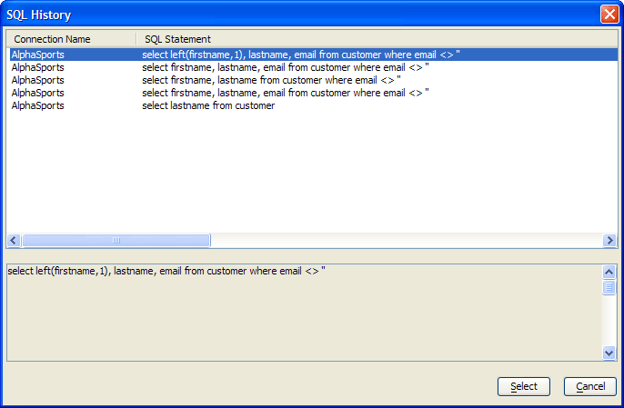

SQL History Dialog
At any time while running the SQL Command
dialog, you may click the  History
button to see a list of SQL statements previously created in this session
in the SQL History Dialog.
History
button to see a list of SQL statements previously created in this session
in the SQL History Dialog.

You may revert to any previous version of the SQL SELECT statement by selecting it from this list and clicking Select.
Limitations
See Also